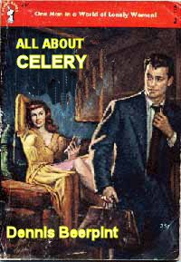
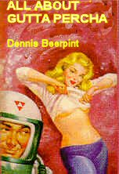
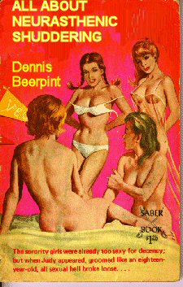
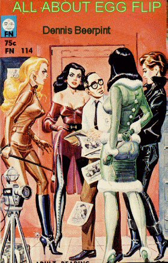

Sunday, August the 22nd, 2004
back to: title, date or indexes
Back in the 1950s, Dennis Beerpint (brother of the poet Gervase) was contracted to write a series of textbooks for schools. Under the umbrella title All About… Dennis wrote an astonishing forty-nine of these titles in the space of two years. It can truly be said that a generation of schoolchildren ought to pay obeisance to Dennis Beerpint, the ungrateful little scalliwags. Hooting Yard is planning to reprint these marvellously instructive books, and we are currently in negotiations to allow us to use the original cover artwork. Here are the first four planned titles:
